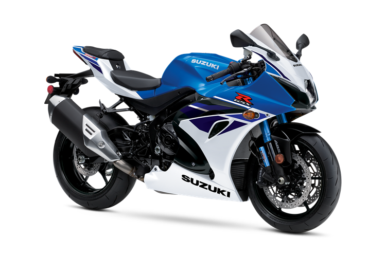
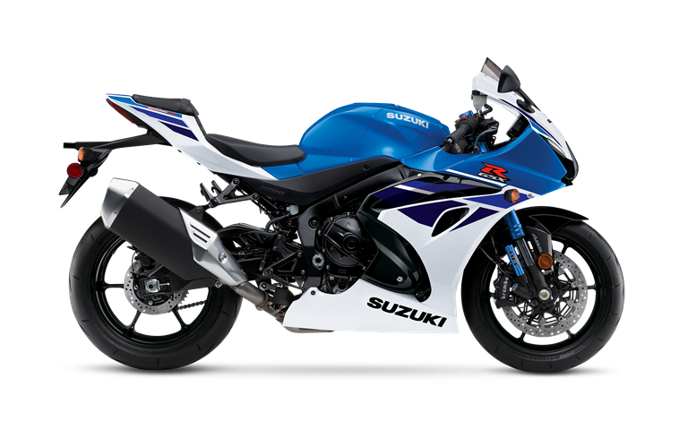

GSX-R 1000RZ SPECIFICATIONS
| Engine | 4-stroke, liquid-cooled, 4-cylinder, DOHC |
| Displacement | 999.8cc |
| Bore x Stroke | 76.0 mm x 55.1 mm |
| Compression Ratio | 13.2:1 |
| Fuel System | Fuel injection with Ride-by-Wire throttle bodies |
| Ignition | Electronic ignition (transistorized) |
| Transmission | 6-speed constant mesh |
| Final Drive | Chain, DID 525HV3, 120 links |
| Front Suspension | Inverted telescopic, coil spring, oil damped |
| Rear Suspension | Link type, single shock, coil spring, oil damped |
| Front Tire | 120/70ZR17M/C (58W), tubeless |
| Rear Tire | 190/55ZR17M/C (75W), tubeless |
| Front Brakes | Brembo Monobloc, 4-piston, twin disc, ABS-equipped |
| Rear Brakes | Nissin, 1-piston, single disc, ABS-equipped |
| Frame Type | Twin-spar aluminum |
| Rake/Trail | 25.0°/4.1 in |
| Overall Length | 81.7 in |
| Overall Width | 27.8 in |
| Overall Height | 45.1 in |
| Ground Clearance | 5.11 in |
| Seat Height | 32.5 in |
| Wheelbase | 55.9 in |
| Curb Weight | 445.0 lb |
| Fuel Capacity | 4.2 gal |
| Special Features | Inertial Measurement Unit (IMU) provides six-direction, three-axis, motion, and position information to the ECM so instantaneous electronic adjustments are made to the Traction Control* and the lean-sensitive Motion Track Anti-Lock Brake System (ABS) |
| Color Choices | Pearl Brilliant White / Metallic Matte Triton Blue |